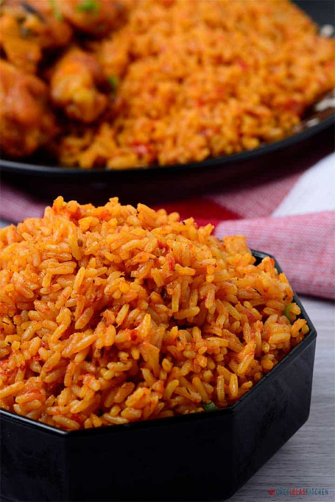

Jollof Rice

Description
A West African rice dish. The dish is typically made with long-grain rice, tomatoes, onions, spices,
vegetables and meat in a single pot, although its ingredients and
preparation methods vary across different regions.
Ingredients
- Tomatoes
- Peppers
- Vegetable oil
- Onions
- Bay leaves
- Water
- Rice
- Salt
- Seasonings(season to taste)
- Vegetables (optional)
- Tomato paste
Steps
- Blend tomatoes, peppers and onions till it reaches a smooth consistency
- Pour your blended tomatoes and peppers into the pot
- Pour in tomato paste
- Add oil and leave to fry
- Add seasonings and salt and mix
- Wash rice while pepper fries
- After pepper has finished frying, add water relative to quantity of rice
- Pour the rice into the pot and leave to cook
- Stir periodically
- When almost done cooking, add vegetables and mix and leavge for a few minutes
- When done cooking, admire your creation
- Jollof rice is now ready